Starting with Research
To get a better understanding of the problem, I needed a better understanding of our customers. The vast majority of business owners and independent professionals (our target customers) have little to no understanding of what liability insurance actually is. To get a grasp on how users perceived our product, I asked a group of users to evaluate our quote screen and answer a few basic questions about our product. The results were eye-opening.
Erasing Assumptions
Based on our quote screen, none of the 50 users surveyed could glean a confident understanding of our product and the majority cited specific information—deductibles, payment plans, terms of use—that was absent from the page. Granted, this page does not exist in a vacuum, but there were clear gaps identified that needed to be addressed.
When asked to describe details of the product being offered, few could express it in their own words and simply reiterated what was on the screen verbatim. This was a significant failure for a product that few understand.
Designing for Trust
From this research, it was clear that we had a lot of work to do. I kicked off a redesign effort targeting the identified problems: 1. Customers need to understand the product, 2. Customers need to trust our company, 3. Customers need confidence to make their decision.
Focus Areas
There's a few concepts I wanted to test out:
-
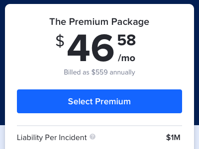
Simple Comparison
The coverage options were made more transparent and placed side-by-side for easy comparison. Previously, a coverage slider was used which made comparing options tedious and confusing.
-
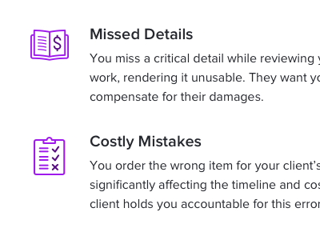
Coverage Explanation
The old design relied solely on targeted scenarios in which coverage would kick in. Here, I've added a brief explanation that covers specific search terms customers were looking for while shopping.
-
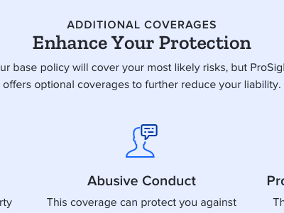
Add-On Coverages
We allow users to add-on additional coverages to their policy after selecting their core product. Now we're explaining that feature a bit more.
-
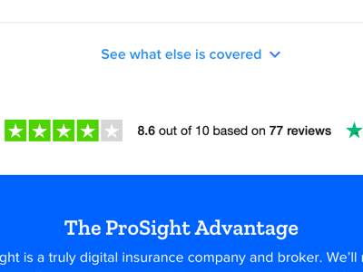
Social Proof
Many customers cited a need to look at reviews or comparison shop before making a purchase. In the redesign, I've added priority to our reviews module to help keep more users on the page.
Getting Feedback
After designing a new page around these concepts I went back to survey users to get more feedback. I asked a few key questions for quantitative data, but allowed some open-ended questions for qualitative responses. When surveying users about their understanding of a product or service they generally are overconfident, written responses helps keep them honest..
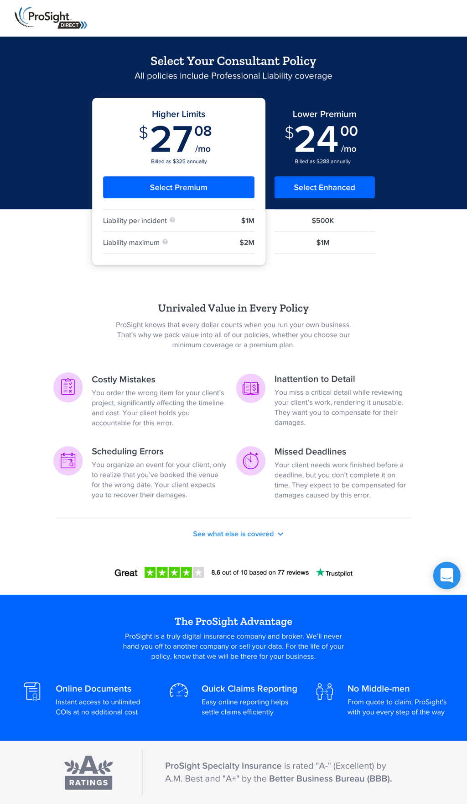
The results didn't really go as planned. Based on the raw data, there weren't any clear answers on any of the questions. But the numbers here don't really do it justice. Even though users who saw the existing design claimed to understand the product, they couldn't define it in their own words. But when I asked those who saw the new design to define liability insurance, most absolutely nailed it.
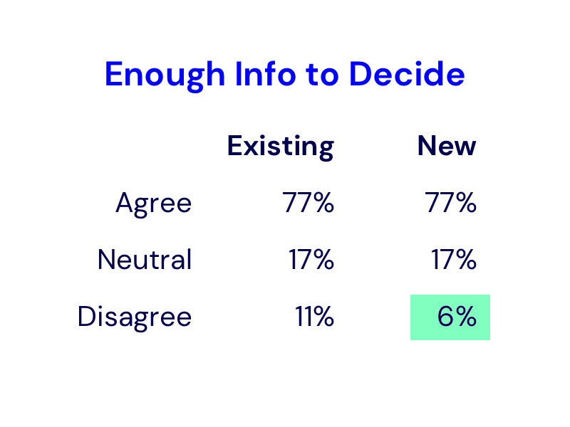
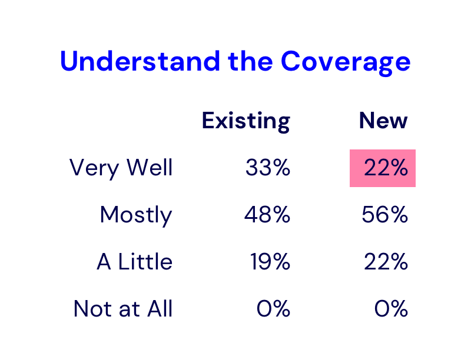
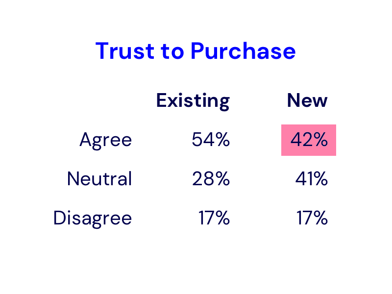
Oddly enough, there was a substantial decrease in users who'd trust our company. Looking a bit further into the responses, there was a general sentiment that it now felt like a generic design which raised a red flag to some users. This would require further iteration.
Final Revision
Incorporating the feedback I received from this test, I revised the design into something that was confidently an improvement over the existing experience.
Finishing Touches
Here's a few of the design details that wrapped up this design:
-
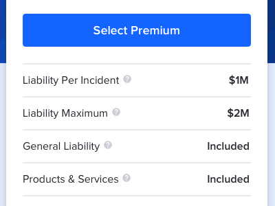
Unique Bundles
Most customers didn't know what coverage they needed so building their own bundle was a daunting task. Now we're offering predefined packages, with clear and understandable variations.
-
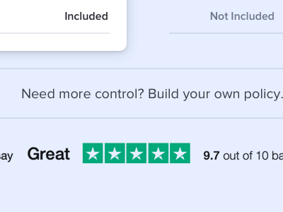
Build Your Own
Some users love the ability to build their own coverage and really take control of their price. Here we're allowing users the choice to make a custom bundle.
-
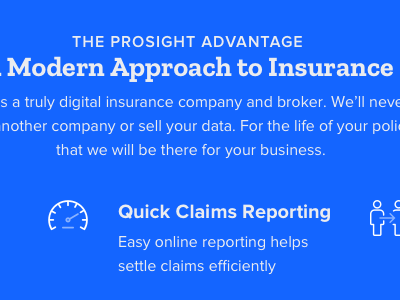
Differentiated Design
Visual design was amped up a bit in an effort to look less generic. Added illustrations and colorful backgrounds help add interest and memorability.
The Results
The final design received resoundingly positive feedback from external users and internal stakeholders alike. Based on testing, the team felt confident that the new design would help reduce the bottleneck in our conversion rate.
Unfortunately, due to shifting priorities in the company, the project was deprioritized. It's on the shelf and ready to be developed whenever a green light is given.
What I Learned
Selling insurance isn't easy. It's a product that customers don't want, don't understand, and is completely invaluable. But by educating customers and giving them the tools to confidently make a decision, it's possible to guide them toward the right purchase.